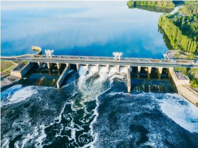

<!DOCTYPE html>
<html lang="pt-BR">
<head>
    <meta charset="UTF-8">
    <meta name="viewport" content="width=device-width, initial-scale=1.0">
    <title>geração de energia hidroéletrica</title>
    <link rel="stylesheet" href="style.css">
</head>
<body>
    
</body>
</html>
<nav>
    <a href="index.html">O que é geração de energia elétrica</a>
    <a href="hidreletrica.html">O que é geração de energia
        hidroelétrica</a>
    <a href="termoeletrica.html">O que é geração de energia
        termoelétrica,</a>
    <a href="eolica.html">O que é geração de energia Eólica</a>
    <a href="solar.html">O que é geração de energia Solar,</a>
</nav>
<h1>O que é geração de energia
    hidroelétrica,</h1>
    <p>Energia hidrelétrica é a eletricidade gerada da força das águas. O processo de transformação da energia potencial da água em energia cinética e, posteriormente, elétrica ocorre no interior das usinas hidrelétricas.</p>
    <br>
    <h2>quais as suas vantagens e desvantagens</h2>
    <p>uma das grandes vantagens de uma idrelétrica é sustentabilidade as idrelétricas são uma forma de energia inesgotavel já que ultilizam como principio a força da agua sem falar que é considerada uma energia limpa e barata.uma desvantagem notavel é que a construção das hidrelétricas é responsável por uma série de impactos ambientais e sociais que podem transformar os ecossistemas locais bem como a vida das populações que vivem nas suas proximidades. </p>
    <div>
        
    </div>
    <small>
        Fonte:
        <a href="https://www.terra.com.br/planeta/meio-ambiente/o-que-e-energia-hidreletrica-suas-vantagens-e-desvantagens,2300877c4eb685dd84b7734c5736c852ivbu66xg.html">terra</a>
    </small>